Simple graphics
In Luxor, there are different ways of working with graphical items:
Draw them immediately. Add points and control points defining curves to build a path on the drawing. When you paint the path, the graphics are drawn, and ‘fixed’, and you move on to the next.
Construct arrays of points - polygons - which you can draw at some later stage. Watch out for a
vertices=trueoption, which returns coordinate data rather than adding shapes to the current path. Polygons are copied to paths when they're drawn.You can combine these two approaches: create a path from lines and curves (and jumps), then store the path, ready for drawing later on.
Line width
The default line width in Luxor is 2 points. (Typically 1 point is 0.352777mm, 1/72.0inch.) Set the line width with setline. Find the current line width with getline. By default, line widths don't vary depending on the current drawing scale, but you can ask for them to be scaled - see Scaling-of-line-thickness.
Rectangles and boxes
Simple rectangle and box shapes can be made in different ways.
rulers()sethue("grey40")rect(Point(0, 0), 100, 100, action = :stroke)sethue("blue")box(Point(0, 0), 100, 100, action=:stroke)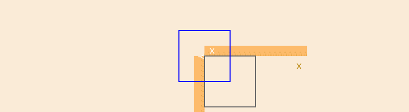
rect rectangles are positioned by a corner, a box made with box can be defined either by its center and dimensions, or by two opposite corners.
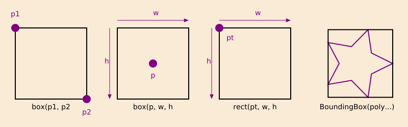
If you want the coordinates of the corners of a box, rather than draw one immediately, use:
box(centerpoint, width, height, vertices=true)or
box(corner1, corner2, vertices=true)box is also able to draw some of the other Luxor objects, such as BoundingBoxes and Table cells, and usually also returns the coordinates of the corners.
box(Point(0, 0), 100, 100)4-element Vector{Point}:
Point(-50.0, 50.0)
Point(-50.0, -50.0)
Point(50.0, -50.0)
Point(50.0, 50.0)To draw a box/rectangle with rounded corners, supply one or four values for corner radii.
setline(6)box(O, 200, 150, 10, action = :stroke) # 1 value for all cornerssethue("purple")box(O, 260, 220, [0, 15, 40, 80], action = :stroke) # different for each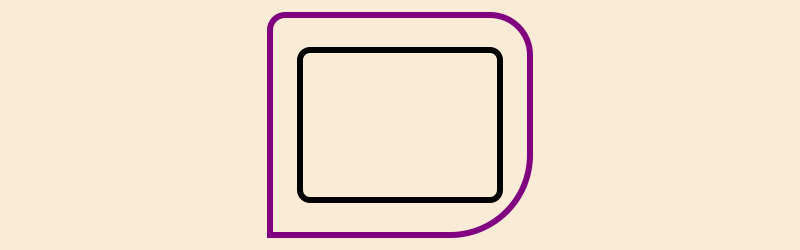
Or you could smooth the sharp corners of a box, like so:
setline(4)polysmooth(box(O, 200, 150, vertices=true), 10, action = :stroke)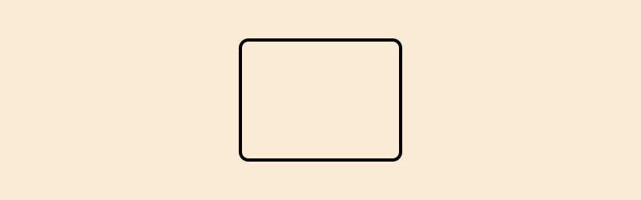
The squircle function makes nicer shapes.
Triangles, pentagons, and regular polygons
For regular polygons, pentagons, and so on, see the section on Polygons and paths. If you like drawing hexagons, you could also read Hexagonal grids. Eqilateral Triangular grids are also provided (EquilateralTriangleGrid).
Circles and ellipses
There are various ways to make circles, including by center and radius, or passing through two or three points:
sethue("black")p1 = Point(0, -50)p2 = Point(100, 0)p3 = Point(0, 65)map(p -> circle(p, 4, action = :fill), [p1, p2, p3])sethue("orange")circle(center3pts(p1, p2, p3)..., action = :stroke)sethue("red")p1 = Point(0, 30)p2 = Point(20, -40)p3 = Point(50, 5)circle.((p1, p2, p3), 3, action = :stroke)circle(p1, p2, p3, action = :stroke)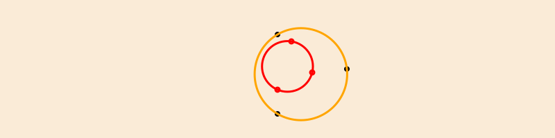
The center3pts function returns the center position and radius of a circle passing through three points:
sethue("black")p1 = Point(0, -50)p2 = Point(100, 0)p3 = Point(0, 65)map(p -> circle(p, 4, action = :fill), [p1, p2, p3])sethue("orange")circle(center3pts(p1, p2, p3)..., action = :stroke)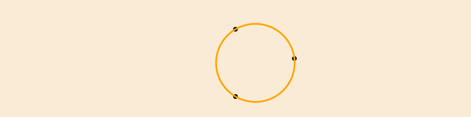
With ellipse you can place ellipses and circles by defining the center point and the width and height.
tiles = Tiler(500, 300, 5, 5)width = 20height = 25for (pos, n) in tiles global width, height randomhue() ellipse(pos, width, height, action = :fill) sethue("black") label = string(round(width/height, digits=2)) textcentered(label, pos.x, pos.y + 25) width += 2end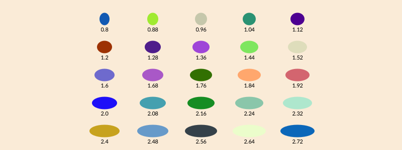
ellipse can also construct polygons that are approximations to ellipses. You supply two focal points and a length which is the sum of the distances of a point on the perimeter to the two focii.
fontface("Menlo")f1 = Point(-100, 0)f2 = Point(100, 0)circle.([f1, f2], 3, action = :fill)epoly = ellipse(f1, f2, 250, vertices=true)poly(epoly, action = :stroke, close=true)pt = epoly[rand(1:end)]poly([f1, pt, f2], action = :stroke)label("f1", :W, f1, offset=10)label("f2", :E, f2, offset=10)label(string(round(distance(f1, pt), digits=1)), :SE, midpoint(f1, pt))label(string(round(distance(pt, f2), digits=1)), :SW, midpoint(pt, f2))label("ellipse(f1, f2, 250)", :S, Point(0, 75))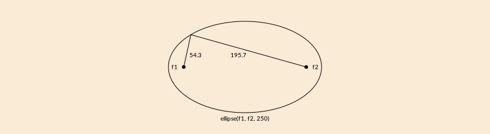
The advantage of this method is that there's a vertices=true option, allowing further scope for polygon manipulation.
f1 = Point(-100, 0)f2 = Point(100, 0)ellipsepoly = ellipse(f1, f2, 170, :none, vertices=true)[ begin setgray(rescale(c, 150, 1, 0, 1)) poly(offsetpoly(ellipsepoly, c), close=true, action = :fill); rotate(π/20) end for c in 150:-10:1 ]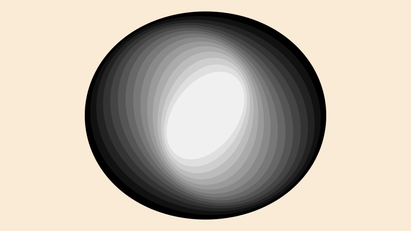
The ellipseinquad function constructs an ellipse that fits inside a four-sided quadrilateral.
pg = ngon(O, 250, 6, π/6, vertices=true)top = vcat(O, pg[[3, 4, 5]])left = vcat(O, pg[[1, 2, 3]])right = vcat(O, pg[[5, 6, 1]])sethue("red")poly(top, action = :fill, close=true)sethue("green")poly(left, action = :fill, close=true)sethue("blue")poly(right, action = :fill, close=true)sethue("orange")ellipseinquad.((top, left, right), action = :fill)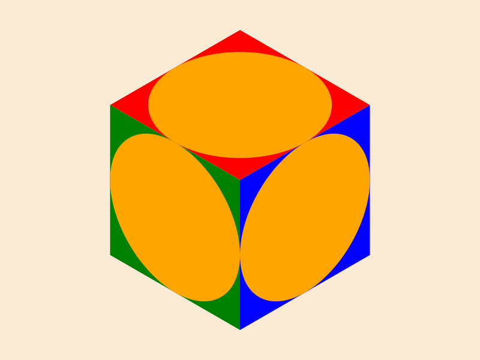
circlepath constructs a circular path from Bézier curves.
setline(4)tiles = Tiler(600, 250, 1, 5)for (pos, n) in tiles randomhue() circlepath(pos, tiles.tilewidth/2, action = :path) newsubpath() circlepath(pos, rand(5:tiles.tilewidth/2 - 1), action = :fill, reversepath=true)end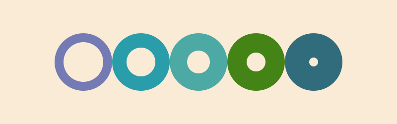
Circles and tangents
Functions to find tangents to circles include:
pointcircletangentfinds a point on a circle that lies on line through another pointcirclecircleoutertangentsfinds the points that lie on outer tangents to two circlescirclecircleinnertangentsfinds the points that lie on inner tangents to two circlescircletangent2circlesmakes circles of a particular radius tangential to two circlescirclepointtangentmakes circles of a particular radius passing through a point and tangential to another circle
point = Point(-150, 0)circlecenter = Point(150, 0)circleradius = 80circle.((point, circlecenter), 5, action = :fill)circle(circlecenter, circleradius, action = :stroke)pt1, pt2 = pointcircletangent(point, circlecenter, circleradius)circle.((pt1, pt2), 5, action = :fill)sethue("grey65")rule(point, slope(point, pt1))rule(point, slope(point, pt2))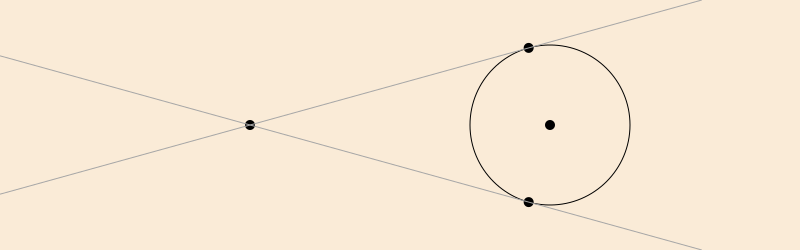
circle1center = Point(-150, 0)circle1radius = 60circle2center = Point(150, 0)circle2radius = 80circle.((circle1center, circle2center), 5, action = :fill)circle(circle1center, circle1radius, action = :stroke)circle(circle2center, circle2radius, action = :stroke)p1, p2, p3, p4 = circlecircleoutertangents( circle1center, circle1radius, circle2center, circle2radius)sethue("orange")rule(p1, slope(p1, p2))rule(p3, slope(p3, p4))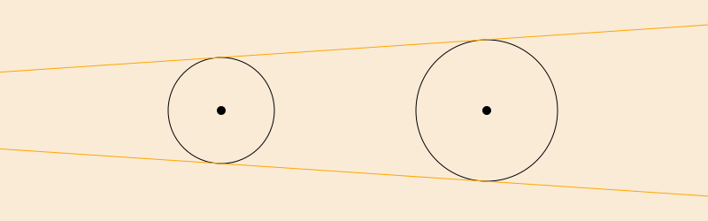
Finding the inner tangents requires a separate function.
circle1center = Point(-150, 0)circle1radius = 60circle2center = Point(150, 0)circle2radius = 80circle.((circle1center, circle2center), 5, action = :fill)circle(circle1center, circle1radius, action = :stroke)circle(circle2center, circle2radius, action = :stroke)p1, p2, p3, p4 = circlecircleinnertangents( circle1center, circle1radius, circle2center, circle2radius)label.(("p1", "p2", "p3", "p4"), :n, (p1, p2, p3, p4))sethue("orange")rule(p1, slope(p1, p2))rule(p3, slope(p3, p4))sethue("purple")circle.((p1, p2, p3, p4), 3, action = :fill)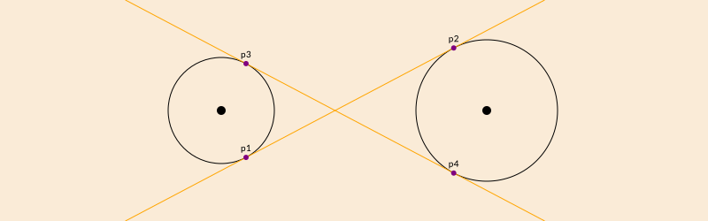
circletangent2circles takes the required radius and two existing circles:
circle1 = (Point(-100, 0), 90)circle(circle1..., action = :stroke)circle2 = (Point(100, 0), 90)circle(circle2..., action = :stroke)requiredradius = 25ncandidates, p1, p2 = circletangent2circles(requiredradius, circle1..., circle2...)if ncandidates == 2 sethue("orange") circle(p1, requiredradius, action = :fill) sethue("green") circle(p2, requiredradius, action = :fill) sethue("purple") circle(p1, requiredradius, action = :stroke) circle(p2, requiredradius, action = :stroke)end# the circles are 10 apart, so there should be just one circle# that fits thererequiredradius = 10ncandidates, p1, p2 = circletangent2circles(requiredradius, circle1..., circle2...)if ncandidates == 1 sethue("blue") circle(p1, requiredradius, action = :fill) sethue("cyan") circle(p1, requiredradius, action = :stroke)end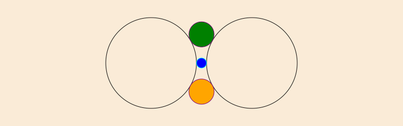
circlepointtangent looks for circles of a specified radius that pass through a point and are tangential to a circle. There are usually two candidates.
circle1 = (Point(-100, 0), 90)circle(circle1..., action = :stroke)requiredradius = 50requiredpassthrough = O + (80, 0)ncandidates, p1, p2 = circlepointtangent(requiredpassthrough, requiredradius, circle1...)if ncandidates == 2 sethue("orange") circle(p1, requiredradius, action = :stroke) sethue("green") circle(p2, requiredradius, action = :stroke)endsethue("black")circle(requiredpassthrough, 4, action = :fill)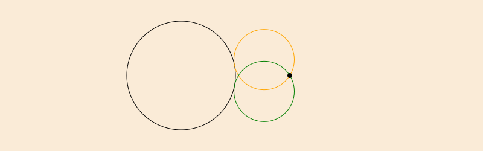
These last two functions can return 0, 1, or 2 points (since there are often two solutions to a specific geometric layout).
circlering constructs n circles inside an outer circle and tangent to it. It returns both an array of 'circles' ((pt, radius) tuples), and details of the circle that fits inside them.
background("antiquewhite") sethue("rebeccapurple") setline(3) circle(Point(0, 0), 200, :stroke) cs, ic = circlering(Point(0, 0), 200, 10) for c in cs circle(first(c), last(c), :stroke) end circle(first(ic), last(ic), :stroke)" fill-opacity="1"/>
<path fill="none" stroke-width="3" stroke-linecap="butt" stroke-linejoin="miter" stroke="rgb(40%25, 20%25, 60%25)" stroke-opacity="1" stroke-miterlimit="10" d="M 600 225 C 600 335.457031 510.457031 425 400 425 C 289.542969 425 200 335.457031 200 225 C 200 114.542969 289.542969 25 400 25 C 510.457031 25 600 114.542969 600 225 Z M 600 225 "/>
<path fill="none" stroke-width="3" stroke-linecap="butt" stroke-linejoin="miter" stroke="rgb(40%25, 20%25, 60%25)" stroke-opacity="1" stroke-miterlimit="10" d="M 570.820312 314.808594 C 570.820312 340.882812 549.683594 362.015625 523.609375 362.015625 C 497.535156 362.015625 476.398438 340.882812 476.398438 314.808594 C 476.398438 288.734375 497.535156 267.597656 523.609375 267.597656 C 549.683594 267.597656 570.820312 288.734375 570.820312 314.808594 Z M 570.820312 314.808594 "/>
<path fill="none" stroke-width="3" stroke-linecap="butt" stroke-linejoin="miter" stroke="rgb(40%25, 20%25, 60%25)" stroke-opacity="1" stroke-miterlimit="10" d="M 494.425781 370.3125 C 494.425781 396.386719 473.289062 417.523438 447.214844 417.523438 C 421.140625 417.523438 400.003906 396.386719 400.003906 370.3125 C 400.003906 344.238281 421.140625 323.101562 447.214844 323.101562 C 473.289062 323.101562 494.425781 344.238281 494.425781 370.3125 Z M 494.425781 370.3125 "/>
<path fill="none" stroke-width="3" stroke-linecap="butt" stroke-linejoin="miter" stroke="rgb(40%25, 20%25, 60%25)" stroke-opacity="1" stroke-miterlimit="10" d="M 399.996094 370.3125 C 399.996094 396.386719 378.859375 417.523438 352.785156 417.523438 C 326.710938 417.523438 305.574219 396.386719 305.574219 370.3125 C 305.574219 344.238281 326.710938 323.101562 352.785156 323.101562 C 378.859375 323.101562 399.996094 344.238281 399.996094 370.3125 Z M 399.996094 370.3125 "/>
<path fill="none" stroke-width="3" stroke-linecap="butt" stroke-linejoin="miter" stroke="rgb(40%25, 20%25, 60%25)" stroke-opacity="1" stroke-miterlimit="10" d="M 323.601562 314.808594 C 323.601562 340.882812 302.464844 362.015625 276.390625 362.015625 C 250.316406 362.015625 229.179688 340.882812 229.179688 314.808594 C 229.179688 288.734375 250.316406 267.597656 276.390625 267.597656 C 302.464844 267.597656 323.601562 288.734375 323.601562 314.808594 Z M 323.601562 314.808594 "/>
<path fill="none" stroke-width="3" stroke-linecap="butt" stroke-linejoin="miter" stroke="rgb(40%25, 20%25, 60%25)" stroke-opacity="1" stroke-miterlimit="10" d="M 294.417969 225 C 294.417969 251.074219 273.28125 272.210938 247.210938 272.210938 C 221.136719 272.210938 200 251.074219 200 225 C 200 198.925781 221.136719 177.789062 247.210938 177.789062 C 273.28125 177.789062 294.417969 198.925781 294.417969 225 Z M 294.417969 225 "/>
<path fill="none" stroke-width="3" stroke-linecap="butt" stroke-linejoin="miter" stroke="rgb(40%25, 20%25, 60%25)" stroke-opacity="1" stroke-miterlimit="10" d="M 323.601562 135.191406 C 323.601562 161.265625 302.464844 182.402344 276.390625 182.402344 C 250.316406 182.402344 229.179688 161.265625 229.179688 135.191406 C 229.179688 109.117188 250.316406 87.984375 276.390625 87.984375 C 302.464844 87.984375 323.601562 109.117188 323.601562 135.191406 Z M 323.601562 135.191406 "/>
<path fill="none" stroke-width="3" stroke-linecap="butt" stroke-linejoin="miter" stroke="rgb(40%25, 20%25, 60%25)" stroke-opacity="1" stroke-miterlimit="10" d="M 399.996094 79.6875 C 399.996094 105.761719 378.859375 126.898438 352.785156 126.898438 C 326.710938 126.898438 305.574219 105.761719 305.574219 79.6875 C 305.574219 53.613281 326.710938 32.476562 352.785156 32.476562 C 378.859375 32.476562 399.996094 53.613281 399.996094 79.6875 Z M 399.996094 79.6875 "/>
<path fill="none" stroke-width="3" stroke-linecap="butt" stroke-linejoin="miter" stroke="rgb(40%25, 20%25, 60%25)" stroke-opacity="1" stroke-miterlimit="10" d="M 494.425781 79.6875 C 494.425781 105.761719 473.289062 126.898438 447.214844 126.898438 C 421.140625 126.898438 400.003906 105.761719 400.003906 79.6875 C 400.003906 53.613281 421.140625 32.476562 447.214844 32.476562 C 473.289062 32.476562 494.425781 53.613281 494.425781 79.6875 Z M 494.425781 79.6875 "/>
<path fill="none" stroke-width="3" stroke-linecap="butt" stroke-linejoin="miter" stroke="rgb(40%25, 20%25, 60%25)" stroke-opacity="1" stroke-miterlimit="10" d="M 570.820312 135.191406 C 570.820312 161.265625 549.683594 182.402344 523.609375 182.402344 C 497.535156 182.402344 476.398438 161.265625 476.398438 135.191406 C 476.398438 109.117188 497.535156 87.984375 523.609375 87.984375 C 549.683594 87.984375 570.820312 109.117188 570.820312 135.191406 Z M 570.820312 135.191406 "/>
<path fill="none" stroke-width="3" stroke-linecap="butt" stroke-linejoin="miter" stroke="rgb(40%25, 20%25, 60%25)" stroke-opacity="1" stroke-miterlimit="10" d="M 600 225 C 600 251.074219 578.863281 272.210938 552.789062 272.210938 C 526.71875 272.210938 505.582031 251.074219 505.582031 225 C 505.582031 198.925781 526.71875 177.789062 552.789062 177.789062 C 578.863281 177.789062 600 198.925781 600 225 Z M 600 225 "/>
<path fill="none" stroke-width="3" stroke-linecap="butt" stroke-linejoin="miter" stroke="rgb(40%25, 20%25, 60%25)" stroke-opacity="1" stroke-miterlimit="10" d="M 505.582031 225 C 505.582031 283.3125 458.3125 330.582031 400 330.582031 C 341.6875 330.582031 294.417969 283.3125 294.417969 225 C 294.417969 166.6875 341.6875 119.417969 400 119.417969 C 458.3125 119.417969 505.582031 166.6875 505.582031 225 Z M 505.582031 225 "/>
</svg>)
Crescents
Use crescent to construct crescent shapes. There are two methods. The first method allows the two arcs to have the same radius. The second method allows the two arcs to share the same centers.
# method 1: same radius, different centerssethue("purple")crescent(Point(-200, 0), 200, Point(-150, 0), 200, action = :fill)# method 2: same center, different radiisethue("orange")crescent(O, 100, 200, action = :fill)Paths and positions
A path is a sequence of lines and curves. You can add lines and curves to the current path with various functions, then use closepath to join the last point to the first. Once you fill or stroke it, the path is emptied, and you start again.
A path can have subpaths, created withnewsubpath, which can form holes.
There is a 'current point' which you can set with move, and which is updated after functions like line, rline, rmove, text, newpath, closepath, arc, and curve. Use currentpoint and hascurrentpoint to find out about it.
You can store a path for later use with storepath and draw it with drawpath. See Stored paths.
For more about paths, see Polygons and paths and Paths versus polygons.
Lines
Use line and rline to draw straight lines. line(pt1, pt2, action) makes a path consisting of a line between two points. line(pt) adds a line to the current path going from the most recent current point to pt. rline(pt) adds a line relative to the current point.
You can use rule to draw a horizontal line through a point. Supply an angle for lines at an angle to the current x-axis. This example rules lines at an angle of -π/2 to the current x-axis.
y = 10for x in 10 .^ range(0, length=100, stop=3) global y circle(Point(x, y), 2, action = :fill) rule(Point(x, y), -π/2, boundingbox=BoundingBox(centered=false)) y += 2end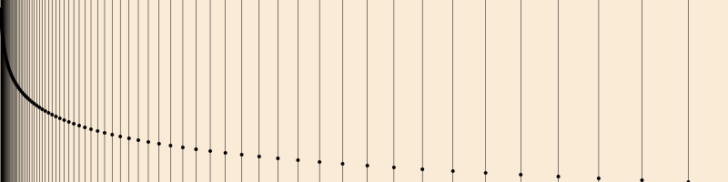
Use the boundingbox keyword argument to crop the ruled lines where they cross the boundaries of a BoundingBox.
origin()box(BoundingBox() * 0.9, action = :stroke)for x in 10 .^ range(0, length=100, stop=3) rule(Point(x, 0), π/2, boundingbox=BoundingBox() * 0.9) rule(Point(-x, 0), π/2, boundingbox=BoundingBox() * 0.9)end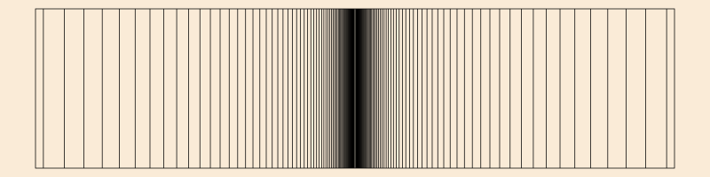
Another method of rule() draws a line through two points.
@drawsvg begin background("antiquewhite") sethue("black") pt1 = Point(-100, -50) pt2 = Point(200, 120) circle.((pt1, pt2), 10, :fill) rule(pt1, pt2)end 800 500" fill-opacity="1"/>
<path fill-rule="nonzero" fill="rgb(0%25, 0%25, 0%25)" fill-opacity="1" d="M 310 200 C 310 205.523438 305.523438 210 300 210 C 294.476562 210 290 205.523438 290 200 C 290 194.476562 294.476562 190 300 190 C 305.523438 190 310 194.476562 310 200 Z M 310 200 "/>
<path fill-rule="nonzero" fill="rgb(0%25, 0%25, 0%25)" fill-opacity="1" d="M 610 370 C 610 375.523438 605.523438 380 600 380 C 594.476562 380 590 375.523438 590 370 C 590 364.476562 594.476562 360 600 360 C 605.523438 360 610 364.476562 610 370 Z M 610 370 "/>
<path fill="none" stroke-width="2" stroke-linecap="butt" stroke-linejoin="miter" stroke="rgb(0%25, 0%25, 0%25)" stroke-opacity="1" stroke-miterlimit="10" d="M 800 483.332031 L 0 30 "/>
</svg>)
This next example rules lines passing through each pair of adjacent points of the edge of a squircle curve.
using Luxor, Colors@drawsvg begin background("black") fontsize(500) fontface("Times-Bold") pts = polybspline(squircle(O, 140, 140, vertices=true), 120) setline(0.5) for i in eachindex(pts) sethue(HSL(rescale(i, 1, length(pts), 1, 360), 0.8, 0.8)) rule(pts[i], pts[mod1(i + 1, end)]) endend 800 500d1 = svgstring()@drawsvg begin background("grey10") # draw image im = readsvg(d1) placeimage(im, centered=true, O) # define "loupe" point_of_interest = Point(120, -120) radius_of_interest = 25 point_of_display = Point(350, -50) radius_of_display = 140 # "magnification is $(radius_of_display / radius_of_interest)" # draw contents of loupe @layer begin translate(point_of_display) setline(2) circle(O, radius_of_display, :clip) scale(radius_of_display / radius_of_interest) placeimage(im, centered=true, -point_of_interest) clipreset() end # draw loupe itself sethue("white") setline(2) circle(point_of_interest, radius_of_interest, :stroke) circle(point_of_display, radius_of_display, :stroke) d = distance(point_of_interest, point_of_display) line( between(point_of_display, point_of_interest, radius_of_display / d), between(point_of_display, point_of_interest, 1 - radius_of_interest / d), :stroke)end 1200 500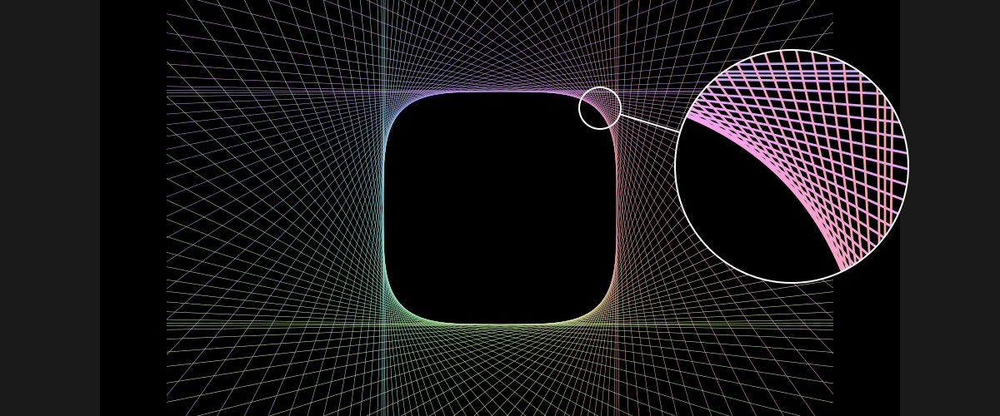
Arrows
You can draw lines, arcs, and curves with arrows at the end with arrow.
| type | function call |
|---|---|
| straight between two points | arrow(pt, pt) |
| curved: radius + two angles | arrow(pt, rad, θ1, θ2) |
| Bezier 4 points | arrow(pt1, pt2, pt3, pt4, action) |
| Bezier start finish + box | arrow(pt1, pt2, [ht1, ht2]) |
For straight arrows, supply the start and end points. For arrows as circular arcs, you provide center, radius, and start and finish angles. You can optionally provide dimensions for the arrowheadlength and arrowheadangle of the tip of the arrow (angle in radians between side and center). The default line weight is 1.0, equivalent to setline(1), but you can specify another.
arrow(Point(0, 0), Point(0, -65))arrow(Point(0, 0), Point(100, -65), arrowheadlength=20, arrowheadangle=pi/4, linewidth=.3)arrow(Point(0, 0), 100, π, π/2, arrowheadlength=25, arrowheadangle=pi/12, linewidth=1.25)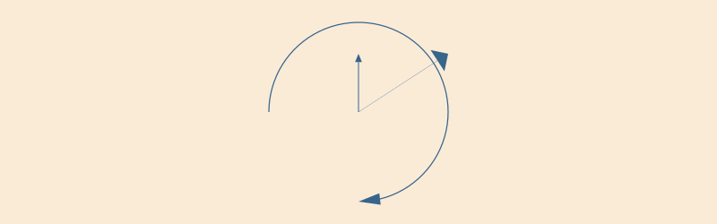
If you provide four points, you can draw a Bézier curve with optional arrowheads at each end. Use the various options to control their presence and appearance.
pts = ngon(Point(0, 0), 100, 8, vertices=true)sethue("mediumvioletred")arrow(pts[2:5]..., :stroke, startarrow=false, finisharrow=true)sethue("cyan4")arrow(pts[3:6]..., startarrow=true, finisharrow=true)sethue("midnightblue")arrow(pts[[4, 2, 6, 8]]..., :stroke, startarrow=true, finisharrow=true, arrowheadangle = π/6, arrowheadlength = 35, linewidth = 1.5)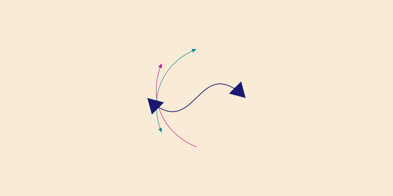
Decoration
The arrow functions allow you to specify decorations - graphics at one or more points somewhere along the shaft. For example, say you want to draw a number and a circle at the midpoint of an arrow's shaft, you can define a function that draws text t in a circle of radius r like this:
function marker(r, t) @layer begin sethue("purple") circle(Point(0, 0), r, :fill) sethue("white") fontsize(30) text(string(t), halign=:center, valign=:middle) endendand then pass this to the decorate keyword argument of arrow. By default, the graphics origin when the function is called is placed at the midpoint (0.5) of the arrow's shaft.
pts = ngon(Point(0, 0), 100, 5, vertices=true)sethue("mediumvioletred")# using an anonymous functionarrow(pts[1:4]..., decorate = () -> marker(10, 3))sethue("olivedrab")# no arrow, just a graphic, at 0.75arrow(pts[1:4]..., decorate = () -> ngon(Point(0, 0), 20, 4, 0, action = :fill), decoration = 0.75, :none) # default action is :stroke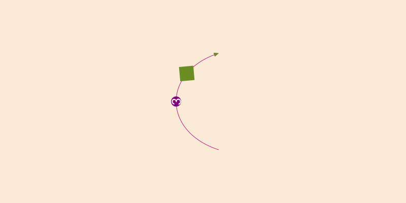
Use the decoration keyword to specify one or more locations other than the default 0.5.
The graphics environment provided by the decorate function is centered at each decoration point in turn, and rotated to the slope of the shaft at that point.
using Luxorfunction fletcher() line(O, polar(30, deg2rad(220)), action = :stroke) line(O, polar(30, deg2rad(140)), action = :stroke)end@drawsvg begin background("antiquewhite") arrow(O, 150, 0, π + π/3, linewidth=5, arrowheadlength=50, decorate=fletcher, decoration=range(0., .1, length=3))end 800 350" fill-opacity="1"/>
<path fill="none" stroke-width="5" stroke-linecap="butt" stroke-linejoin="miter" stroke="rgb(0%25, 0%25, 0%25)" stroke-opacity="1" stroke-miterlimit="10" d="M 550 175 C 550 224.484375 525.59375 270.785156 484.769531 298.75 C 443.945312 326.714844 391.953125 332.746094 345.8125 314.871094 C 299.667969 296.992188 265.3125 257.507812 253.984375 209.339844 C 242.65625 161.167969 255.8125 110.507812 289.152344 73.941406 "/>
<path fill-rule="nonzero" fill="rgb(0%25, 0%25, 0%25)" fill-opacity="1" d="M 277.015625 59.148438 L 325 45.097656 L 301.007812 88.960938 "/>
<path fill="none" stroke-width="5" stroke-linecap="butt" stroke-linejoin="miter" stroke="rgb(0%25, 0%25, 0%25)" stroke-opacity="1" stroke-miterlimit="10" d="M 550 175 L 569.285156 152.019531 "/>
<path fill="none" stroke-width="5" stroke-linecap="butt" stroke-linejoin="miter" stroke="rgb(0%25, 0%25, 0%25)" stroke-opacity="1" stroke-miterlimit="10" d="M 550 175 L 530.714844 152.019531 "/>
<path fill="none" stroke-width="5" stroke-linecap="butt" stroke-linejoin="miter" stroke="rgb(0%25, 0%25, 0%25)" stroke-opacity="1" stroke-miterlimit="10" d="M 547.183594 203.925781 L 570.539062 185.09375 "/>
<path fill="none" stroke-width="5" stroke-linecap="butt" stroke-linejoin="miter" stroke="rgb(0%25, 0%25, 0%25)" stroke-opacity="1" stroke-miterlimit="10" d="M 547.183594 203.925781 L 532.695312 177.65625 "/>
<path fill="none" stroke-width="5" stroke-linecap="butt" stroke-linejoin="miter" stroke="rgb(0%25, 0%25, 0%25)" stroke-opacity="1" stroke-miterlimit="10" d="M 538.84375 231.761719 L 565.390625 217.785156 "/>
<path fill="none" stroke-width="5" stroke-linecap="butt" stroke-linejoin="miter" stroke="rgb(0%25, 0%25, 0%25)" stroke-opacity="1" stroke-miterlimit="10" d="M 538.84375 231.761719 L 529.691406 203.191406 "/>
</svg>)
Custom arrowheads
To make custom arrowheads, you can define a three-argument function that draws them to your own design. This function takes the arguments:
the point at the end of the arrow's shaft
the point where the tip of the arrowhead would be
the angle of the shaft at the end
You can then use any code to draw the arrow. Pass this function to the arrow function's arrowheadfunction keyword.
function redbluearrow(shaftendpoint, endpoint, shaftangle) @layer begin sethue("red") sidept1 = shaftendpoint + polar(10, shaftangle + π/2 ) sidept2 = shaftendpoint - polar(10, shaftangle + π/2) poly([sidept1, endpoint, sidept2], action=:fill) sethue("blue") poly([sidept1, endpoint, sidept2], action=:stroke, close=false) endend@drawsvg begin background("antiquewhite") arrow(O, O + (120, 120), linewidth=4, arrowheadlength=40, arrowheadangle=π/7, arrowheadfunction = redbluearrow) arrow(O, 100, 3π/2, π, linewidth=4, arrowheadlength=20, clockwise=false,arrowheadfunction=redbluearrow)end 800 250" fill-opacity="1"/>
<path fill="none" stroke-width="4" stroke-linecap="butt" stroke-linejoin="miter" stroke="rgb(0%25, 0%25, 0%25)" stroke-opacity="1" stroke-miterlimit="10" d="M 400 125 L 494.515625 219.515625 "/>
<path fill-rule="nonzero" fill="rgb(100%25, 0%25, 0%25)" fill-opacity="1" stroke-width="4" stroke-linecap="butt" stroke-linejoin="miter" stroke="rgb(0%25, 0%25, 100%25)" stroke-opacity="1" stroke-miterlimit="10" d="M 487.445312 226.585938 L 520 245 L 501.585938 212.445312 "/>
<path fill="none" stroke-width="4" stroke-linecap="butt" stroke-linejoin="miter" stroke="rgb(0%25, 0%25, 0%25)" stroke-opacity="1" stroke-miterlimit="10" d="M 400 25 C 351.855469 25 310.546875 59.304688 301.703125 106.628906 "/>
<path fill-rule="nonzero" fill="rgb(100%25, 0%25, 0%25)" fill-opacity="1" stroke-width="4" stroke-linecap="butt" stroke-linejoin="miter" stroke="rgb(0%25, 0%25, 100%25)" stroke-opacity="1" stroke-miterlimit="10" d="M 291.746094 105.703125 L 300 125 L 311.660156 107.550781 "/>
</svg>)
Arcs and curves
There are a few standard arc-drawing commands, such as curve, arc, carc, and arc2r. Because these are often used when building complex paths, they usually add arc sections to the current path. To construct a sequence of lines and arcs, use the :path action, followed by a final :stroke or similar.
curve constructs Bézier curves from control points:
setline(.5)pt1 = Point(0, -125)pt2 = Point(200, 125)pt3 = Point(200, -125)label.(string.(["O", "control point 1", "control point 2", "control point 3"]), :e, [O, pt1, pt2, pt3])sethue("red")map(p -> circle(p, 4, action=:fill), [O, pt1, pt2, pt3])line(Point(0, 0), pt1, action=:stroke)line(pt2, pt3, action = :stroke)sethue("black")setline(3)# start a pathmove(Point(0, 0))curve(pt1, pt2, pt3) # add to current pathstrokepath()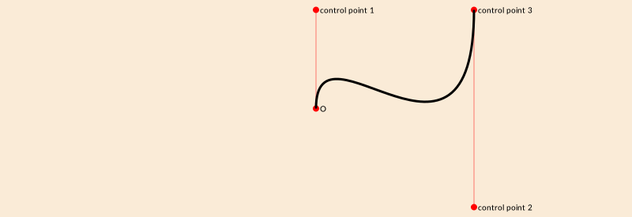
arc2r draws a circular arc centered at a point that passes through two other points:
tiles = Tiler(700, 200, 1, 6)for (pos, n) in tiles c1, pt2, pt3 = ngon(pos, rand(10:50), 3, rand(0:pi/12:2pi), vertices=true) sethue("black") map(pt -> circle(pt, 4, action = :fill), [c1, pt3]) sethue("red") circle(pt2, 4, action = :fill) randomhue() arc2r(c1, pt2, pt3, action = :stroke)end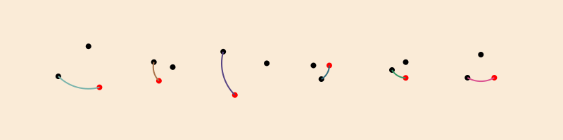
arc2sagitta and carc2sagitta make circular arcs based on two points and the sagitta.
pt1 = Point(-100, 0)pt2 = Point(100, 0)for n in reverse(range(1, length=7, stop=120)) sethue("red") rule(Point(0, -n)) sethue(LCHab(70, 80, rescale(n, 120, 1, 0, 359))) pt, r = arc2sagitta(pt1, pt2, n, action = :fillpreserve) sethue("black") strokepath() text(string(round(n)), O + (120, -n))endcircle.((pt1, pt2), 5, action = :fill)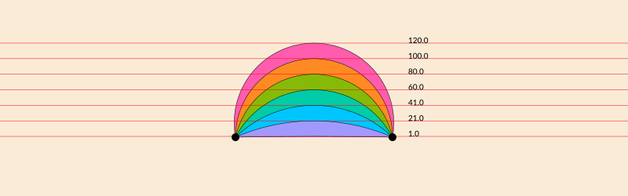
More curved shapes: sectors, spirals, and squircles
A sector (technically an "annular sector") has an inner and outer radius, as well as start and end angles.
sethue("tomato")sector(50, 90, π/2, 0, action=:fill)sethue("olive")sector(Point(O.x + 200, O.y), 50, 90, 0, π/2, action=:fill)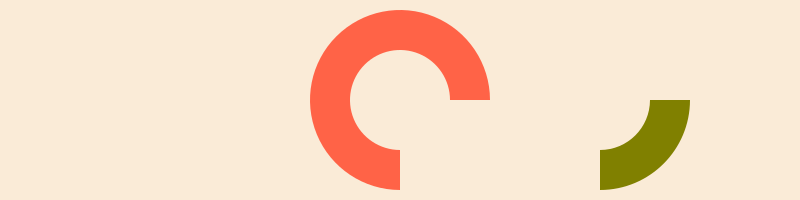
You can also supply a value for a corner radius. The same sector is drawn but with rounded corners.
sethue("tomato")sector(50, 90, π/2, 0, 15, action = :fill)sethue("olive")sector(Point(O.x + 200, O.y), 50, 90, 0, π/2, 15, action = :fill)A pie (or wedge) has start and end angles.
pie(0, 0, 100, π/2, π, action = :fill)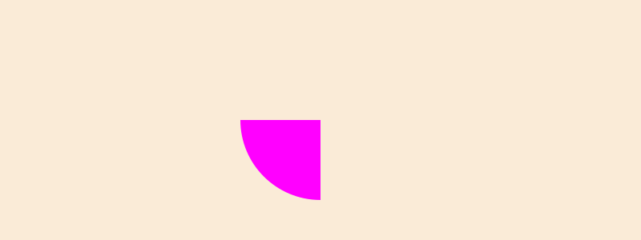
To construct spirals, use the spiral function. These can be drawn directly, or used as polygons. The default is to draw Archimedean (non-logarithmic) spirals.
spiraldata = [ (-2, "Lituus", 50), (-1, "Hyperbolic", 100), ( 1, "Archimedes", 1), ( 2, "Fermat", 5)]grid = GridRect(O - (200, 0), 130, 50)for aspiral in spiraldata @layer begin translate(nextgridpoint(grid)) spiral(last(aspiral), first(aspiral), period=20π, action = :stroke) label(aspiral[2], :S, offset=100) endend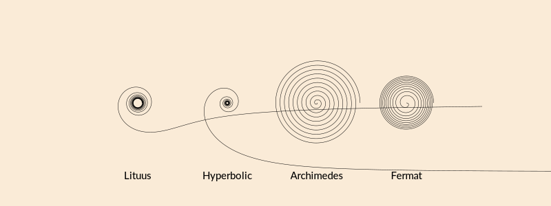
Use the log=true option to draw logarithmic (Bernoulli or Fibonacci) spirals.
spiraldata = [ (10, 0.05), (4, 0.10), (0.5, 0.17)]grid = GridRect(O - (200, 0), 175, 50)for aspiral in spiraldata @layer begin translate(nextgridpoint(grid)) spiral(first(aspiral), last(aspiral), log=true, period=10π, action = :stroke) label(string(aspiral), :S, offset=100) endendModify the stepby and period parameters to taste, or collect the vertices for further processing.
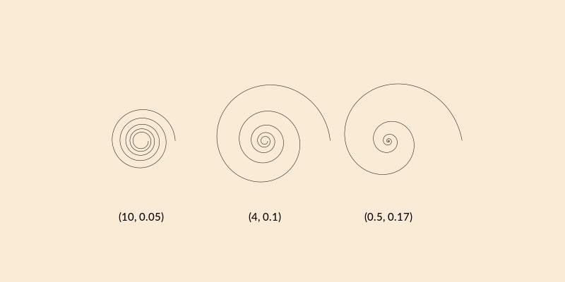
A squircle is a cross between a square and a circle. You can adjust the squariness and circularity of it to taste by supplying a value for the root (keyword rt):
setline(2)tiles = Tiler(600, 250, 1, 3)for (pos, n) in tiles sethue("lavender") squircle(pos, 80, 80, rt=[0.3, 0.5, 0.7][n], action = :fillpreserve) sethue("grey20") strokepath() textcentered("rt = $([0.3, 0.5, 0.7][n])", pos)end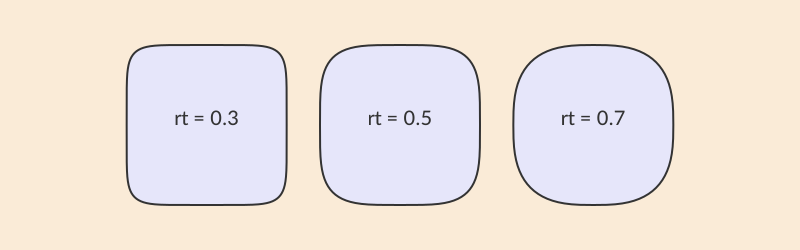
squirclepath() builds a squircle shape using Bézier curves as paths, rather than using polygons. Here, kappa determines the circularity.
setfillrule(:even_odd) sethue("white") for x in 280:-10:10 squirclepath(O, x, x; kappa = x/150, action=:path) end fillpath()" fill-opacity="1"/>
<path fill-rule="evenodd" fill="rgb(100%25, 100%25, 100%25)" fill-opacity="1" d="M 120 350 C 120 -172.667969 -122.667969 70 400 70 C 922.667969 70 680 -172.667969 680 350 C 680 872.667969 922.667969 630 400 630 C -122.667969 630 120 872.667969 120 350 Z M 130 350 C 130 -136 -86 80 400 80 C 886 80 670 -136 670 350 C 670 836 886 620 400 620 C -86 620 130 836 130 350 Z M 140 350 C 140 -100.667969 -50.667969 90 400 90 C 850.667969 90 660 -100.667969 660 350 C 660 800.667969 850.667969 610 400 610 C -50.667969 610 140 800.667969 140 350 Z M 150 350 C 150 -66.667969 -16.667969 100 400 100 C 816.667969 100 650 -66.667969 650 350 C 650 766.667969 816.667969 600 400 600 C -16.667969 600 150 766.667969 150 350 Z M 160 350 C 160 -34 16 110 400 110 C 784 110 640 -34 640 350 C 640 734 784 590 400 590 C 16 590 160 734 160 350 Z M 170 350 C 170 -2.667969 47.332031 120 400 120 C 752.667969 120 630 -2.667969 630 350 C 630 702.667969 752.667969 580 400 580 C 47.332031 580 170 702.667969 170 350 Z M 180 350 C 180 27.332031 77.332031 130 400 130 C 722.667969 130 620 27.332031 620 350 C 620 672.667969 722.667969 570 400 570 C 77.332031 570 180 672.667969 180 350 Z M 190 350 C 190 56 106 140 400 140 C 694 140 610 56 610 350 C 610 644 694 560 400 560 C 106 560 190 644 190 350 Z M 200 350 C 200 83.332031 133.332031 150 400 150 C 666.667969 150 600 83.332031 600 350 C 600 616.667969 666.667969 550 400 550 C 133.332031 550 200 616.667969 200 350 Z M 210 350 C 210 109.332031 159.332031 160 400 160 C 640.667969 160 590 109.332031 590 350 C 590 590.667969 640.667969 540 400 540 C 159.332031 540 210 590.667969 210 350 Z M 220 350 C 220 134 184 170 400 170 C 616 170 580 134 580 350 C 580 566 616 530 400 530 C 184 530 220 566 220 350 Z M 230 350 C 230 157.332031 207.332031 180 400 180 C 592.667969 180 570 157.332031 570 350 C 570 542.667969 592.667969 520 400 520 C 207.332031 520 230 542.667969 230 350 Z M 240 350 C 240 179.332031 229.332031 190 400 190 C 570.667969 190 560 179.332031 560 350 C 560 520.667969 570.667969 510 400 510 C 229.332031 510 240 520.667969 240 350 Z M 250 350 C 250 200 250 200 400 200 C 550 200 550 200 550 350 C 550 500 550 500 400 500 C 250 500 250 500 250 350 Z M 260 350 C 260 219.332031 269.332031 210 400 210 C 530.667969 210 540 219.332031 540 350 C 540 480.667969 530.667969 490 400 490 C 269.332031 490 260 480.667969 260 350 Z M 270 350 C 270 237.332031 287.332031 220 400 220 C 512.667969 220 530 237.332031 530 350 C 530 462.667969 512.667969 480 400 480 C 287.332031 480 270 462.667969 270 350 Z M 280 350 C 280 254 304 230 400 230 C 496 230 520 254 520 350 C 520 446 496 470 400 470 C 304 470 280 446 280 350 Z M 290 350 C 290 269.332031 319.332031 240 400 240 C 480.667969 240 510 269.332031 510 350 C 510 430.667969 480.667969 460 400 460 C 319.332031 460 290 430.667969 290 350 Z M 300 350 C 300 283.332031 333.332031 250 400 250 C 466.667969 250 500 283.332031 500 350 C 500 416.667969 466.667969 450 400 450 C 333.332031 450 300 416.667969 300 350 Z M 310 350 C 310 296 346 260 400 260 C 454 260 490 296 490 350 C 490 404 454 440 400 440 C 346 440 310 404 310 350 Z M 320 350 C 320 307.332031 357.332031 270 400 270 C 442.667969 270 480 307.332031 480 350 C 480 392.667969 442.667969 430 400 430 C 357.332031 430 320 392.667969 320 350 Z M 330 350 C 330 317.332031 367.332031 280 400 280 C 432.667969 280 470 317.332031 470 350 C 470 382.667969 432.667969 420 400 420 C 367.332031 420 330 382.667969 330 350 Z M 340 350 C 340 326 376 290 400 290 C 424 290 460 326 460 350 C 460 374 424 410 400 410 C 376 410 340 374 340 350 Z M 350 350 C 350 333.332031 383.332031 300 400 300 C 416.667969 300 450 333.332031 450 350 C 450 366.667969 416.667969 400 400 400 C 383.332031 400 350 366.667969 350 350 Z M 360 350 C 360 339.332031 389.332031 310 400 310 C 410.667969 310 440 339.332031 440 350 C 440 360.667969 410.667969 390 400 390 C 389.332031 390 360 360.667969 360 350 Z M 370 350 C 370 344 394 320 400 320 C 406 320 430 344 430 350 C 430 356 406 380 400 380 C 394 380 370 356 370 350 Z M 380 350 C 380 347.332031 397.332031 330 400 330 C 402.667969 330 420 347.332031 420 350 C 420 352.667969 402.667969 370 400 370 C 397.332031 370 380 352.667969 380 350 Z M 390 350 C 390 349.332031 399.332031 340 400 340 C 400.667969 340 410 349.332031 410 350 C 410 350.667969 400.667969 360 400 360 C 399.332031 360 390 350.667969 390 350 Z M 390 350 "/>
</svg>)
Stars and crosses
Use star to make a star. You can draw it immediately, or use the array of points it can create.
tiles = Tiler(400, 300, 4, 6, margin=5)for (pos, n) in tiles randomhue() star(pos, tiles.tilewidth/3, rand(3:8), 0.5, 0, action = :fill)end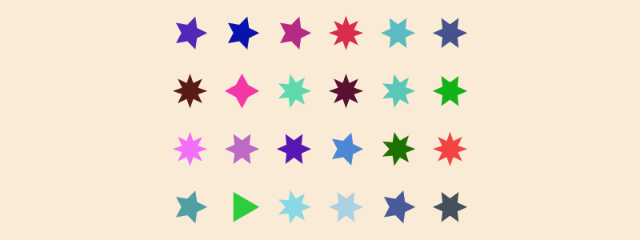
The ratio determines the length of the inner radius compared with the outer.
tiles = Tiler(800, 250, 1, 6, margin=10)for (pos, n) in tiles s = star(pos, tiles.tilewidth/2, 5, 1/n, 0, action = :stroke) l2 = distance(pos, s[1]) l1 = distance(pos, s[2]) text(string(round(l1/l2, digits=2)), pos, halign=:center)end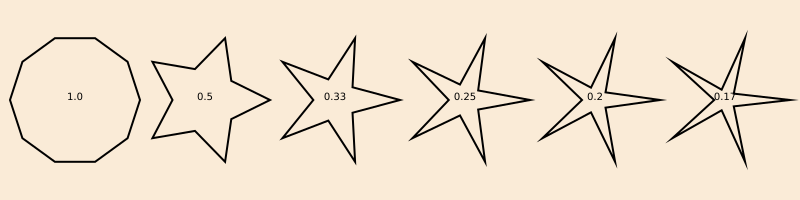
Use polycross to draw a cross-shaped polygon.
tiles = Tiler(600, 600, 4, 4, margin=10)for (pos, n) in tiles randomhue() polycross(pos, min(tiles.tileheight/3, tiles.tilewidth/3), n + 2, # number of points rescale(n, 1, length(tiles), 0.9, 0.1), # ratio 0, # orientation action=:fill)end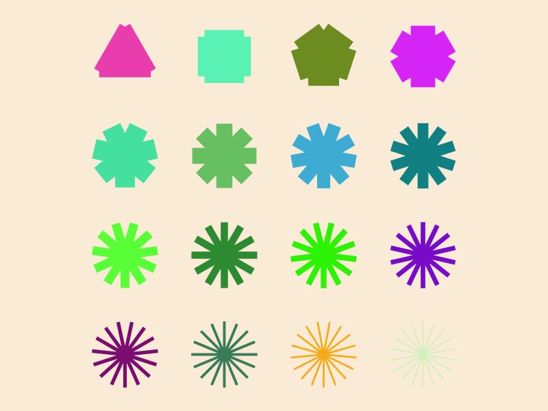
Stored paths
It's possible to store the current path in a Path object. For example, this code:
fontsize(160)fontface("Bodoni-Poster")textpath("†", O, halign=:center, valign=:middle)dagger = storepath()stores the instructions to build the current path (which describe the dagger symbol) in dagger.
The dagger is a Luxor Path type, and contains:
PathMove(Point(2.0, 90.5625)),PathCurve(Point(4.08203125, 68.16015625), Point(11.28125, 45.28125), Point(24.8828125, 26.40234375)),PathCurve(Point(17.51953125, 22.87890625), Point(2.0, 14.71875), Point(2.0, 5.12109375)),PathCurve(Point(2.0, 2.5625), Point(3.12109375, 0.640625), Point(5.83984375, 0.640625)),PathCurve(Point(12.8828125, 0.640625), Point(11.6015625, 14.2421875), Point(26.16015625, 14.2421875)),PathCurve(Point(35.76171875, 14.2421875), Point(42.0, 7.83984375), Point(42.0, -1.59765625)),PathCurve(Point(42.0, -10.3984375), Point(34.9609375, -17.4375), Point(26.16015625, -17.4375)),PathCurve(Point(10.9609375, -17.4375), Point(13.04296875, -3.6796875), Point(6.48046875, -3.6796875)),PathCurve(Point(3.6015625, -3.6796875), Point(1.83984375, -6.3984375), Point(1.83984375, -9.12109375)),PathCurve(Point(1.83984375, -14.3984375), Point(12.2421875, -23.6796875), Point(15.44140625, -26.87890625)),PathCurve(Point(18.640625, -30.078125), Point(19.76171875, -34.3984375), Point(19.76171875, -38.71875)),PathCurve(Point(19.76171875, -49.7578125), Point(10.9609375, -56.640625), Point(0.40234375, -56.640625)),PathCurve(Point(-11.1171875, -56.640625), Point(-19.91796875, -49.7578125), Point(-19.91796875, -38.71875)),PathCurve(Point(-19.91796875, -34.3984375), Point(-18.80078125, -30.078125), Point(-15.59765625, -26.87890625)),PathCurve(Point(-12.3984375, -23.6796875), Point(-2.0, -14.3984375), Point(-2.0, -9.12109375)),PathCurve(Point(-2.0, -6.3984375), Point(-3.7578125, -3.6796875), Point(-6.640625, -3.6796875)),PathCurve(Point(-13.19921875, -3.6796875), Point(-11.1171875, -17.4375), Point(-26.3203125, -17.4375)),PathCurve(Point(-35.1171875, -17.4375), Point(-42.16015625, -10.3984375), Point(-42.16015625, -1.59765625)),PathCurve(Point(-42.16015625, 7.83984375), Point(-35.91796875, 14.2421875), Point(-26.3203125, 14.2421875)),PathCurve(Point(-11.7578125, 14.2421875), Point(-13.0390625, 0.640625), Point(-6.0, 0.640625)),PathCurve(Point(-3.27734375, 0.640625), Point(-2.16015625, 2.5625), Point(-2.16015625, 5.12109375)),PathCurve(Point(-2.16015625, 14.71875), Point(-17.6796875, 22.87890625), Point(-25.0390625, 26.40234375)),PathCurve(Point(-11.4375, 45.28125), Point(-4.23828125, 68.16015625), Point(-2.16015625, 90.5625)),PathClose(),PathMove(Point(48.87890625, 56.640625))You can draw this later:
for θ in range(0, step=2π/10, length=10) @layer begin rotate(θ) translate(150, 0) rotate(π/2) drawpath(dagger, action = :fill) endend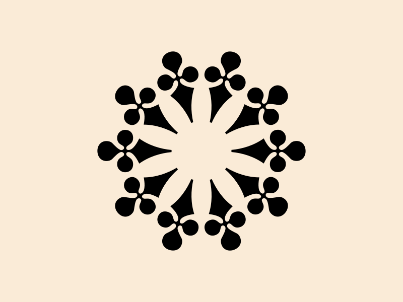
After you've stored the current path, it's still active. You might want to use newpath() before starting the next one. The drawpath() function will by default start a new path but there is an option to continue drawing the current one.
Other functions for working with stored paths include:
drawpathdraw all or part of a stored path using the current graphics statepathsampleresample the stored pathpathlengthfind the length of a stored pathmovepathmove the stored coordinates of the pathscalepathscale the path around its centerBoundingBoxfind the bounding box of a stored path
background("black")dagger1 = scalepath(dagger, 0.5)dagger2 = movepath(dagger1, Point(0, 100))for θ in range(0, step=2π/15, length=15) @layer begin rotate(θ) translate(240, 0) rotate(π/2) sethue(Luxor.Colors.Oklch(0.8, 0.3, rescale(θ, 0, 2π, 0, 360))) drawpath(dagger1, action = :fill) drawpath(dagger2, action = :fill) endend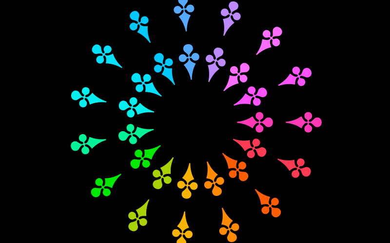
Julia logos
A couple of functions, julialogo and juliacircles, provide you with instant access to the Julia logo and the three colored circles/dots:
cells = Table([300], [350, 350])@layer begin translate(cells[1]) translate(-165, -114) rulers() julialogo()end@layer begin translate(cells[2]) translate(-165, -114) rulers() julialogo(action=:clip) for i in 1:500 @layer begin translate(rand(0:400), rand(0:250)) juliacircles(10) end end clipreset()end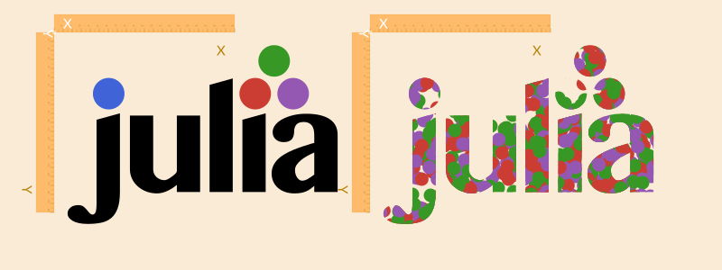
There are various options for julialogo() to control coloring and positioning.
The four standard Julia colors are available as RGB tuples as Luxor.julia_blue, Luxor.julia_green, Luxor.julia_purple, Luxor.julia_red:
julia> Luxor.julia_red(0.796, 0.235, 0.2)Hypotrochoids
hypotrochoid makes hypotrochoids. The result is a polygon. You can either draw it directly, or pass it on for further polygon fun, as here, which uses offsetpoly to trace round it a few times.
origin()background("grey15")sethue("antiquewhite")setline(1)p = hypotrochoid(100, 25, 55, action = :stroke, stepby=0.01, vertices=true)for i in 0:3:15 poly(offsetpoly(p, i), action = :stroke, close=true)end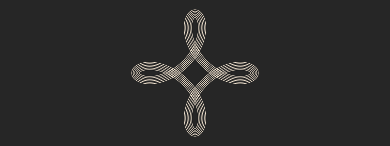
There's a matching epitrochoid function.
Ticks
The tickline function lets you divide the space between two points by drawing ‘ticks’, short parallel lines positioned equidistant between the two points.
In its simplest form the function can used to draw basic number lines, complete with automatic text labels.
background("antiquewhite")# major defaults to 1tickline(Point(-350, -100), Point(350, -100))# three major ticks insertedtickline(Point(-350, 0), Point(350, 0), major=3, startnumber=0, finishnumber=100)# four minor ticks inserted between each majortickline(Point(-350, 100), Point(350, 100), major=3, minor=4)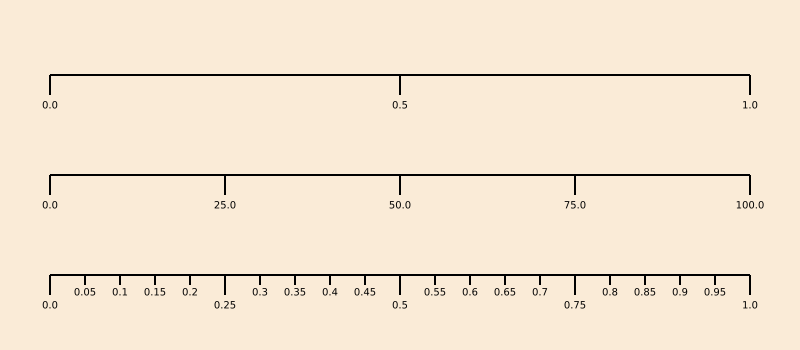
The function returns the positions of the generated ticks in two arrays of points - the locations of the major and minor ticks.
The spaced positions (linear or logarithmic) are useful even when you switch off the display of text using vertices=true, which just returns vertices.
# no axistickline(Point(-350, -100), Point(350, -100), minor=9, axis=false)# logarithmicmajticks, minticks = tickline(Point(-350, 0), Point(350, 0), major=9, startnumber=1, finishnumber=10, log=true, vertices=false)# just the verticesmajticks, minticks = tickline(Point(-350, 100), Point(350, 100), major=9, minor=4, log=true, axis=false, vertices=true)circle.(majticks, 5, action = :fill)box.(minticks, 1, 25, action = :fill)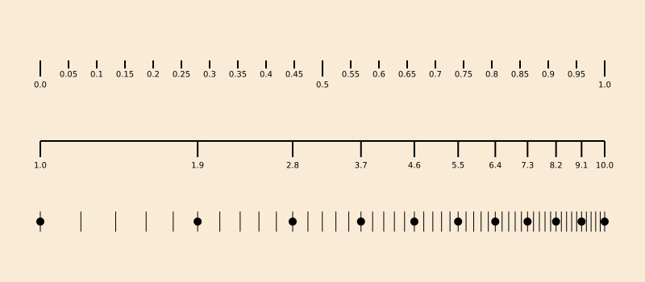
You can pass a function that generates custom graphics and text for each tick.
function color_temp(n, pos; startnumber = 0, finishnumber = 1, nticks = 1) k = rescale(n, 0, nticks - 1, startnumber, finishnumber) sethue(RGB(colormatch(k))) circle(pos, 20, action = :fillpreserve) sethue("white") strokepath() text("$(convert(Int, floor(k))) nm", pos - (0, 30), halign=:left, angle=-π/4)endtickline(Point(-350, 0), Point(350, 0), startnumber=350, finishnumber=750, major=10, major_tick_function=color_temp)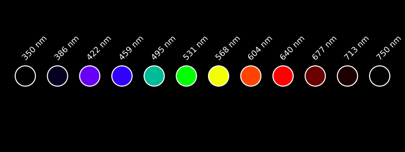
Sometimes you just want a sequence of spaced points.
_, minticks = tickline(Point(-400, 0), Point(260, 0), major=0, minor=40, log=true, axis=false, vertices=true)for (n, pt) in enumerate(minticks) k = rescale(n, 1, length(minticks), 0, 1) sethue(LCHab(60, 100, 360k)) setline(1/k) wave = [pt + Point(120k * sin(y), 600/2π * y) for y in -π:π/20:π] poly(wave, action = :stroke)end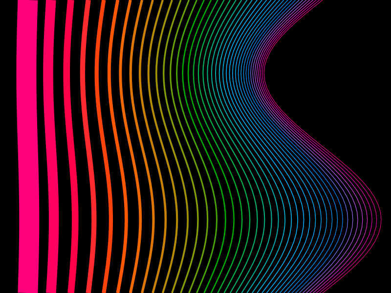
Cropmarks
If you want cropmarks (aka trim marks), use the cropmarks function, supplying the centerpoint, followed by the width and height:
cropmarks(O, 1200, 1600)
cropmarks(O, paper_sizes["A0"]...)sethue("red")box(O, 150, 150, action = :stroke)cropmarks(O, 150, 150)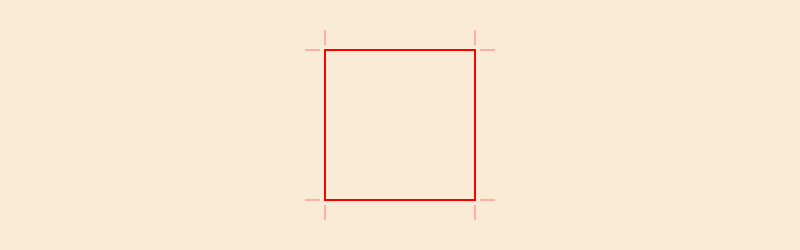
Dimensioning
Simple dimensioning graphics can be generated with dimension. To convert from the default unit (PostScript points), or to modify the dimensioning text, supply a function to the format keyword argument.
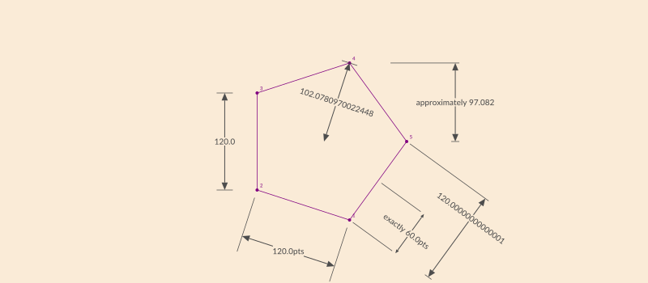
setline(0.75)sethue("purple")pentagon = ngonside(O, 120, 5, vertices=true)poly(pentagon, action = :stroke, close=true)circle.(pentagon, 2, action = :fill)fontsize(6)label.(split("12345", ""), :NE, pentagon)fontface("Menlo")fontsize(10)sethue("grey30")dimension(O, pentagon[4], fromextension = [0, 0])dimension(pentagon[1], pentagon[2], offset = -60, fromextension = [20, 50], toextension = [20, 50], textrotation = 2π/5, textgap = 20, format = (d) -> string(round(d, digits=4), "pts"))dimension(pentagon[2], pentagon[3], offset = -40, format = string)dimension(pentagon[5], Point(pentagon[5].x, pentagon[4].y), offset = 60, format = (d) -> string("approximately ",round(d, digits=4)), fromextension = [5, 5], toextension = [80, 5])dimension(pentagon[1], midpoint(pentagon[1], pentagon[5]), offset = 70, fromextension = [65, -5], toextension = [65, -5], texthorizontaloffset = -5, arrowheadlength = 5, format = (d) -> begin if isapprox(d, 60.0) string("exactly ", round(d, digits=4), "pts") else string("≈ ", round(d, digits=4), "pts") end end)dimension(pentagon[1], pentagon[5], offset = 120, fromextension = [5, 5], toextension = [115, 5], textverticaloffset = 0.5, texthorizontaloffset = 0, textgap = 5)Barcharts
For simple barcharts, use the barchart function, supplying an array of numbers:
fontsize(7)sethue("black")v = rand(-100:100, 25)barchart(v, labels=true)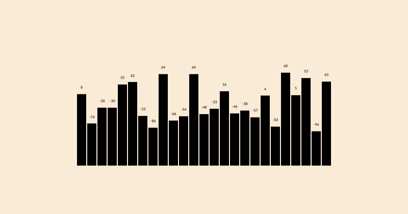
To change the way the bars and labels are drawn, define some functions and pass them as keyword arguments:
function mybarfunction(values, i, low, high, barwidth, scaledvalue) @layer begin extremes = extrema(values) sethue(Colors.HSB(rescale(values[i], extremes[1], extremes[2], 0, 360), 1.0, 0.5)) csize = rescale(values[i], extremes[1], extremes[2], 5, 15) circle(high, csize, action = :fill) setline(1) sethue("blue") line(low, high, action = :stroke) sethue("white") text(string(values[i]), high, halign=:center, valign=:middle) endendfunction mylabelfunction(values, i, low, high, barwidth, scaledvalue) @layer begin translate(low) text(string(values[i]), O + (0, 10), halign=:center, valign=:middle) endendv = rand(1:100, 15)bbox = BoundingBox() * 0.8box(bbox, action = :clip)p = barchart(v, boundingbox=bbox, barfunction=mybarfunction, labelfunction=mylabelfunction)rule(p[1])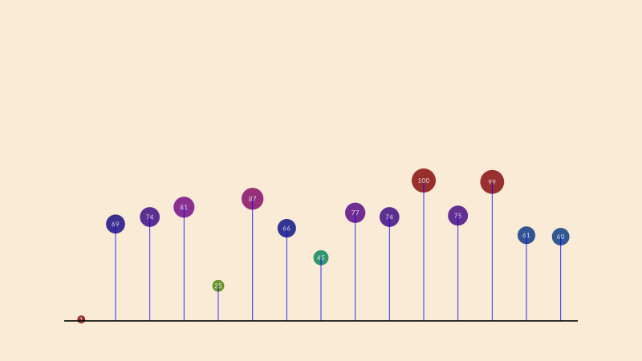
Box maps
The boxmap function divides a rectangular area into a sorted arrangement of smaller boxes or tiles based on the values of elements in an array.
This example uses the Fibonacci sequence to determine the area of the boxes. Notice that the values are sorted in reverse, and are scaled to fit in the available area.
You specify the top left corner of the graphic, the width, and the height.
fib = [1, 1, 2, 3, 5, 8, 13, 21, 34, 55, 89, 144]# make a boxmap and store the tilestiles = boxmap(fib, BoundingBox()[1], 800, 450)for (n, t) in enumerate(tiles) randomhue() bb = BoundingBox(t) sethue("black") box(bb - 5, action = :stroke) randomhue() box(bb - 8, action = :fill) # text labels sethue("white") # rescale text to fit better fontsize(boxwidth(bb) > boxheight(bb) ? boxheight(bb)/4 : boxwidth(bb)/4) text(string(sort(fib, rev=true)[n]), midpoint(bb[1], bb[2]), halign=:center, valign=:middle)end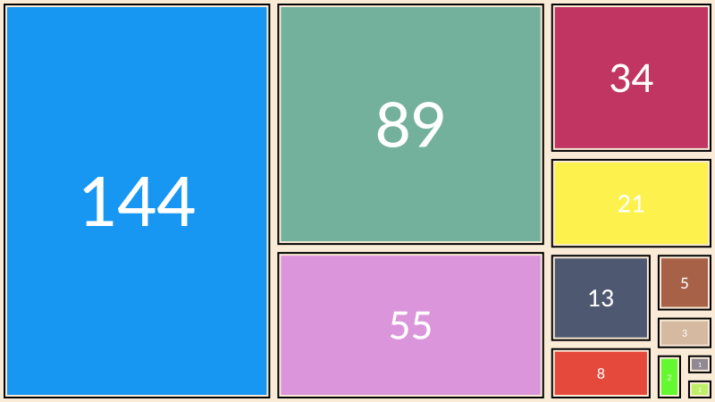